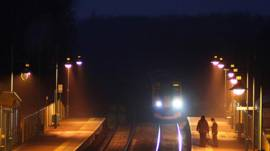

Nga nói khủng bố khiến phi cơ Nga bị đâm
Nga nói hành động khủng bố đã khiến chiếc phi cơ của Nga bị đâm ở Ai Cập hồi tháng 10 và giết hại tất cả 224 người trên máy bay.
.17 tháng 11 năm 2015 | Thế giới
Phi cơ Nga: Bom trong khoang hành lí.


Bóng đá: Tuyển Anh thắng Pháp 2 - 0
Tuyển Anh thắng Pháp 2 -0 trên sân Wembley nhờ công của Alli ở phút 39 và Rooney phts 47, trong trận cầu diễn ra chỉ vài ngày sau vụ khủng bố ở Paris.
5 giờ trước | Thế giới

Tham nhũng, ma tuý đông gấp bội "đối lập"
Bộ trưởng Công an Trần Đại Quang cho biết r=trong hơn 3 năm qua, Bộ này xác nhận có 350 đối tượng "lập hội chống đối".
17 tháng 11 năm 2015 | Việt Nam
Charlie Sheen xác nhận nhiễm HIV
17 tháng 11 năm 2015 | Thế giới
Bắt nghi can vụ giết bà Hà Linh
17 tháng 11 năm 2015 | Việt Nam
Úc nhận 5 người tị nạn Syria đầu tiên
17 tháng 11 năm 2015 | Thế giới
Nhiều bang Mỹ ngưng nhận tị nạn Syria
17 tháng 11 năm 2015 | Thế giới
Vietcombank ngưng dịch vụ ATM cho ngoại kiều
17 tháng 11 năm 2015 | Kinh tế


IS là gì và nguy hiểm tới đâu?
BBC Tiếng Việt điểm lại các quan điểm đánh giá ý thức hệ, thực lực quân sự của Nhà nước Hồi giáo
.16 tháng 11 năm 2015 | Thế giới


Nhiều người Hồi giáo đã khóc trước Balaclan
Nhà báo tự do Phạm Cao Phong nói nhiều người Hồi giáo đã thật sự khóc và hat La ỏ nơi xảy ra khủng bố.
15 tháng 11 năm 2015

Cổ phiếu du lịch giảm vì tấn công Paris
Cổ phiếu của các hãng hành không du lịch của châu Âu bị giảm mạnh vào thứ Hai vì nhà đầu tư lo lắng về ảnh hưởng của các cuộc tấn công ở Paris
17 tháng 11 năm 2015

Anh Pháp giao hữu: Trận thách thức khủng bố
Tuyến Pháp sé dến Anh với một thông điệp của sự đề kháng sau vụ tấn công đẫm máu.
17 tháng 11 năm 2015

Dấu ấn Mao: Từ Hồng về binh tới ông Tập
Bộ đồ đặc trưng thời Cách mạng Văn hoá được kẻ xấu trong phim phương Tây ưu dung và cũng là lựa chọn ưu thích của Chủ tịch TO.
13 tháng 11 năm 2015

Máy bay Nga bị rơi tại Sinai, Ai Cập
Viện chức năng hàng không Nga loại bỏ lỗi kĩ thuật hay lỗi pjhi công trong vụ rớt máy bay tại Sinai, Ai Cập
13 tháng 11 năm 2015

Giải ảnh CGAP 2015
Tác giả VN là một trong số đoạt giải cuộc thi ảnh CGAP nhằm thấy cuộc sống người nghèo được cải thiện qua các dịch vụ tài chính.

Ảnh dự thi National Geographic
Một số bức ảnh tham dự cuộc thi National Geographic 2015 với các chủ đề Con người, Nơi chốn và Thiên nhiên.
Góc nhìn và chuyên mục
Bí ẩn những chuyến tàu ma ỏ Anh

Đài Loan, Tây Tạng và những quốc gia không tồn tại

Nghi phạm chính vụ Paris: Abdelhamid Abaaoud

Việt Nam: "Người tham nhũng xử lý người chống"

Nhà nước hồi giáo thay đổi chiến thuật

K-9 là gì và Việt Tân ứng xử ra sao?

Dùng vũ lực sẽ gặp cách mạng từ dưới đi lên

Luật báo cí VN là vũ khí phe bảo thủ

Côn đồ đánh chứ không phải công an

Một chút quyền lợi có lung lạc được bạn?
Đọc nhiều nhất
Việt Nam: "Người tham nhũng xử lý người chống"
1
Tham nhũng, ma tuý đồn gấp bội "đối lập"?
2
Cựu cán bộ công an bị tù vì Facebook
3
Bắt nghi can vụ giết bà Hà Linh
4
Thủ tướng và cái giá của sự ngạo mạn
5
Cập nhật lúc 18 thánh 10 năm 2012
Nga nói khủng bố khiến phi cơ Nga bị đâm
6
7
Charlie Sheen xác nhận nhiễm HIV
8
Bí ẩn những chuyến tàu ma ở Anh
9
Bóng đá: Tuyển Anh thắng Pháp 2 - 0